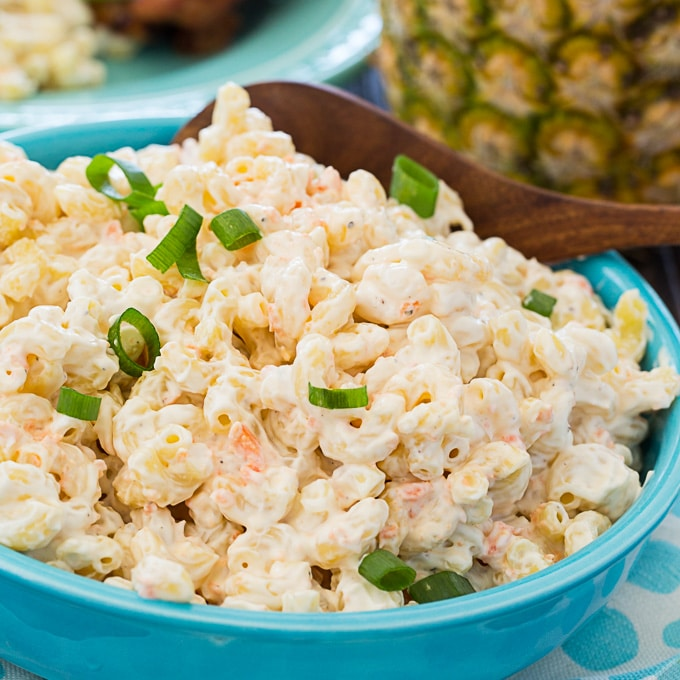

Macaroni Salad

Description
Macaroni salad is a staple Hawaiian side dish along with rice. It is creamy, savory, and refreshing. This recipe is very simple to follow and anybody can make it or even add their own spin to it.
Ingredients
- 1lb Macaroni/Elbow Pasta
- 2 shredded Carrots
- 2 1/2 cups Mayonnaise
- 1/4 cup Milk
- Salt and Pepper
- 2 tablespoons Apple Cider Vinegar
- 1/4 cup shredded Green Onions(Optional)
Steps
- Cook the macoroni accoring to the package directions. Drain the water when it is done cooking and place the macoroni into a large bowl.
- Add the vinegar, shredded carrots, and onions to the bowl and mix well. Refrigerate it for about 15 minutes or until the macoroni is cool.
- In separate bowl whisk together the mayonnaise, milk, and suger until it is uniform.
- Add the mayonnaise mix to the macoroni and mix well until all the macoroni noodles are evenly coated. Add salt and pepper to taste.
- Refrigerate for 4 hours or overnight.